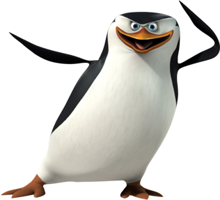

<
SkipperThePenguin
Skipper The Penguin!

Skipper is the leader of the penguins and brother of Rico and Kowalski and adopted older brother of Private.
He was one of the four protagonists in The Penguins of Madagascar and the protagonist-turned-deuteragonist of Penguins of Madagascar: The Movie.
Skipper was born in the frozen tundra of Antarctica with his brothers, Kowalski and Rico. He defied nature when he saw an egg rolling down a hill. The brothers are able to catch the egg, which hatches. When Kowalski tells the cold hard truth of them going to die and that the baby penguin has no family, Skipper and his brothers adopt the penguin as one of their own. They eventually name him Private.